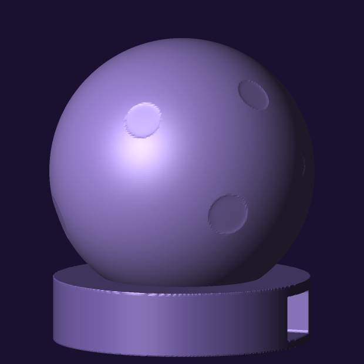
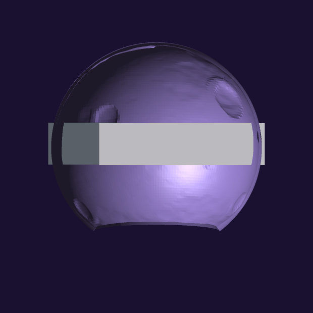
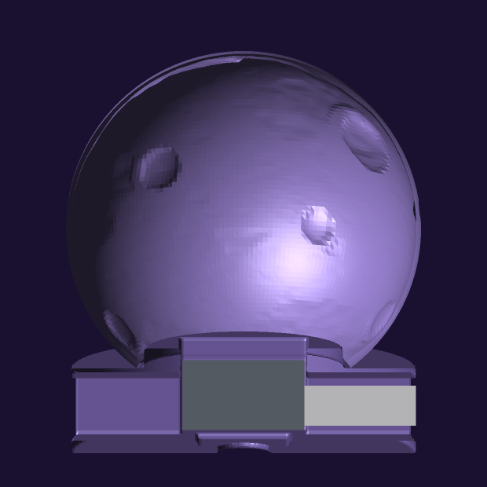
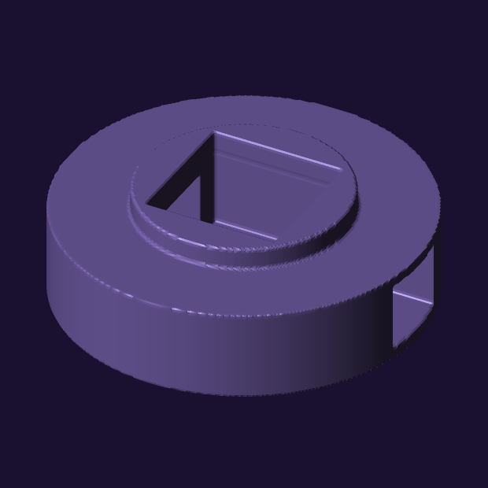
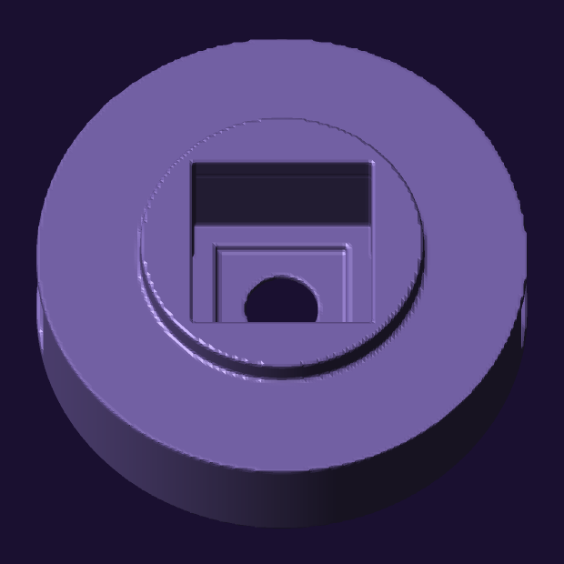
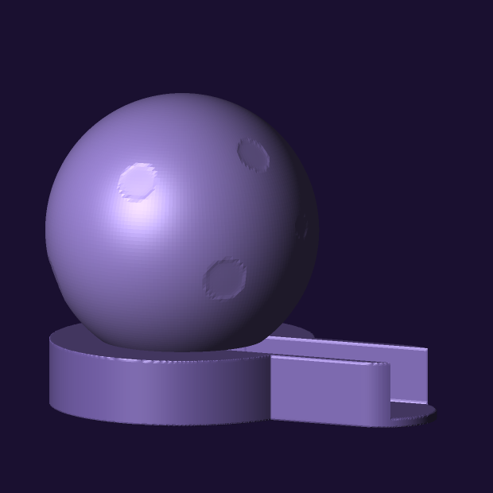
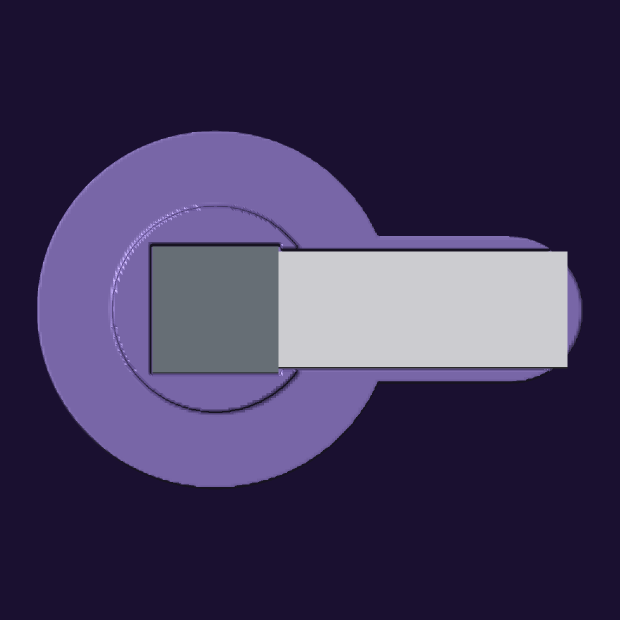
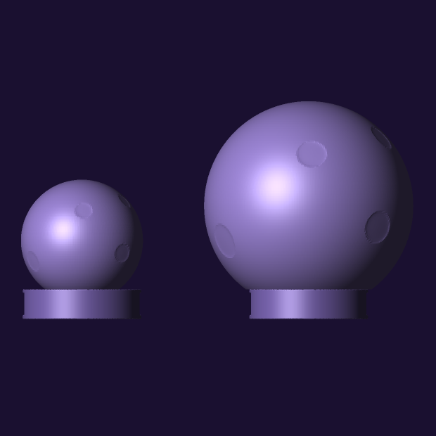

Two files. Both are generated by Python in this container — standard library only, no CAD — and both were re-verified watertight this morning rather than remembered.
| file | what it is | |
|---|---|---|
purple-moon-shell-hires.stl |
The moon. 70 mm sphere, 63 mm tall, 7 mm cut flat off the bottom so it
sits. Opening underneath 42.00 mm outer, 39.87 mm clear. |
Purple translucent PET. 0.12–0.16 mm layers. 100% infill. Variable-width perimeters (Arachne) ON. Not vase mode. No supports. Seam: scarf joint if your slicer offers it, otherwise random. Corrected 16 September — this cell said “aligned, not random” and that was wrong. Why. |
moon-foot.stl |
The foot the moon stands in, and the case for the electronics. 68 mm across, 17 mm tall, plus a 4 mm locating boss. | Same material or any other. 0.2 mm layers, 3 perimeters, 30–40% infill — weight down low is stability. No supports. Print as oriented, boss up. |
moon-foot-tail.stl |
The same foot with a tail that holds the TailBat, so the moon runs off its battery. 104 × 68 mm, 17 mm tall. Alternative to the one above, not an addition — print whichever you want, or both. | As above. Both feet have the identical seat and boss, so either one takes the same moon. |
There is also
purple-moon-shell.stl, the
original 79,200-triangle version of the same geometry. Identical object, coarser
sampling: about 1 mm between surface samples, invisible on the sphere but it
leaves the crater rims visibly polygonal. The hi-res file halves that. Use the
hi-res one unless your slicer chokes.

Dan has an M5Stack ATOM Matrix v1.1 and an ATOM TailBat. From M5Stack’s own documentation, fetched 16 September:
| part | size | notes |
|---|---|---|
| ATOM Matrix v1.1 | 24 × 24 × 14 mm | ESP32-PICO-D4, Wi-Fi, USB-C, 5 × 5 RGB matrix (WS2812C-2020), IMU, one HY2.0 port. The whole LED face is a button. |
| ATOM TailBat | 55 × 22 × 14 mm | 190 mAh, IP5303 power management, physical button, USB-C for charging. It has a male USB-C plug on one end that goes into the ATOM’s own port. |
That last line is the whole problem. The TailBat does not stack under the ATOM; it plugs into its side, so the two make a straight stick 72 to 79 mm long depending how deep the plug seats. The cavity inside the moon is 68 mm.

So the electronics move below the cut plane, into a printed foot, and the shell — frozen since 26 August — is not touched at all. That also happens to be the best place for the light. A flat emitter lying in the plane of the moon’s base lights the sphere almost evenly: 98% of the shell inside 3× of peak brightness, against 23% for the raised position I had proposed the day before. Every scheme that lifted the lamp off the floor made the lighting worse and the packing harder.



| feature | size | why |
|---|---|---|
| Disc | 68.00 mm across, 17.0 tall | Two millimetres under the moon, so it disappears behind it. |
| ATOM pocket | 24.80 mm square, 14.5 deep | 0.40 mm clearance per side on a 24.0 mm part: a drop-in fit, not a press fit. Measured back off the finished mesh at exactly 24.800. |
| Locating boss | r = 19.60 mm, 4 mm tall | Clears the tightest point of the moon’s inner rim (19.9332 mm, measured) by 0.33 mm all the way round. |
| Cable channel | 15 mm wide, 12.5 mm tall | A USB-C overmould is about 12–14 wide and 7–9 tall. It runs right across the disc, under a 2 mm skin. It covers 12.5 mm of the board’s 14 mm height because M5Stack publish no drawing showing how high the port sits, and I do not have the part: the plug seats wherever the port turns out to be. |
| Floor | 2.5 mm, with an 18 mm recess 1.2 deep | The board rests on a ledge round its edge, clear of anything on its underside. |
| Push-out hole | 10 mm | A 0.4 mm clearance pocket has no other exit. |
No soldering. No wiring diagram. There is nothing to get wrong except which way up the ATOM goes.
Updated 08:53 UTC, 16 September, after Dan wrote back. His words:
“It’s ok for it to have only 5-9 hours of autonomy not plugged
in.” An object with no battery has zero hours of autonomy, not
five, so that sentence only parses if the TailBat is in. It is now drawn, and
moon-foot-tail.stl is in the table at the top. What follows is the
case I had made against it, left standing rather than quietly deleted, because
two of the three points are still true and he should price them:
The second point is the one the tail answers: the battery’s end face, carrying its power button and its charging socket, sticks out of the open end of the tray where a thumb can reach it. Nothing is sealed in. The first and third points stand unchanged — it is still one evening, and it is still a much larger object.

moon-foot-tail.stl and the shell. 104 mm long against the
round foot’s 68. I am not going to pretend this is as pretty: the round
one hides behind the moon and this one has a visible handle. That is the whole
price, and it buys the battery.
Both parts are 14 mm tall and mate end to end, so they must stand on the same floor for the plug to line up. The ATOM’s floor is fixed by the optics — its LED face has to sit just under the moon’s mouth — which puts the floor at 2.5 mm and the top of both parts at 16.5 mm, against a seat plane at 17.0. That leaves 0.50 mm above the battery. There is no room for a roof over it where it passes under the moon’s rim, so the tray is open-topped and it cuts a notch in the seat.
I would rather give you the number than the reassurance: the notch removes 65.8° of the moon’s 360° contact circle, leaving 294.2° of continuous support. Anything over 180° cannot tip, so it stands, but you will see a gap where the tail runs under the rim. That falls out of two published dimensions and the position of the lamp; it is not something I can design away.
What I would actually do. Both feet are small prints — well under an hour each, a few grams — and they share the identical seat and boss, so the same moon drops into either. Print the sphere first, because that is the long one and nothing about the electronics changes it. Then print both feet and decide with the object in your hands rather than off my pictures. That is cheaper than me arguing either case.
Daniel printed the 70 mm shell on 16 September, put it next to the two
M5Stack modules, and said it looked small. He is right, and it is not a matter
of taste. The diameter comes from a line written on 26 August whose reason is
still attached to it in moon_shell.py:
BASE_Z = -28.0 # ...wide enough to get a board, a battery
# and a thumb inside.
That board was the 21 × 17.8 mm XIAO and that battery a flat 29 × 36 × 4.75 mm LiPo. That build was abandoned on 2 September, when the parts became an ATOM Matrix and a TailBat that plug end to end into a rigid 72–79 mm stick. The diameter was never re-asked — not on 2 September, not when this page was rewritten on the morning of the 16th, not when the foot was drawn.
The foot is 68 mm and never scales, because it holds fixed-size parts. Every threshold below is that 68 mm, or the parts, against the shell:
| diameter | what it buys |
|---|---|
| 113 mm | the moon’s own flat (0.6 × D) becomes wider than the foot |
| 117 mm | the TailBat alone would pass the mouth |
| 141 mm | both parts inside, with one USB-C extension lead — still no soldering |
| 155 mm | the rigid stick inside as it is, no cable |
The candidate is purple-moon-shell-120.stl
— 120 mm, 260,800 triangles, watertight, 0 bad edges, 0 degenerate,
mouth 72.0 mm. It is regenerated from source, not scaled. That
distinction is the whole point: scaling the printed file 1.714× in a slicer
takes the wall from 0.90–2.40 mm to 1.54–4.11 mm, and transmission
through the thin parts falls to about 56% — a dimmer, muddier moon with the
picture washed out of it. The wall has to stay absolute while the ball grows.
Crater relief was scaled 0.55 → 0.943 mm to keep its proportion, and the
mesh was made denser so facets came out at 0.573 mm, finer than the 0.863 mm on
the printed one. Cost is 2.94× the 70 mm in both time and material, since
both scale as surface area.

Still open. Nothing here is decided, and one cheap test gates
it: put a torch into the hole of the 70 mm shell in a dark room. The whole design
is the wall gradient, and none of it is visible unlit. If the maria go dark the
premise holds and this is only a scaling question. If they do not, the fix is
WALL_MAX rather than diameter, and a 3× print would only have
made the wrong thing bigger.
One thing this section does not claim: that a bigger sphere lights
more evenly. That was the hypothesis, and the model written to prove it returned
100% uniformity at every diameter — because a negated surface normal had
made every value zero, so the peak was zero and everything passed trivially.
Corrected, it agrees with the August model to half a point, and the answer is
that size buys nothing optically: foot.py already recesses the ATOM
so its LED face sits 0.5 mm below the seat, which is the near-ideal
position. The optics were already right.
Generated by moon_shell.py. Two things live in the geometry. The
craters are real dimples, up to 0.55 mm deep, in fixed
hand-placed positions — so it is a moon in daylight, as an object, before
anything is switched on. And the face is in the wall thickness:
0.90 mm where the moon is bright, up to 2.4 mm where it is dark. It is a
lithophane generated from the same crater and maria functions as the picture, so
the image and the object are the same moon. That is why vase mode destroys it
and why the infill has to be solid: a constant wall is a blank ball.

This page told you to set the seam to aligned, not random. That was wrong, and Daniel caught it by slicing the file and looking at it.
Where the bad rule came from: on a flat lithophane panel, aligned parks the seam on a vertical edge and it vanishes into the frame. That is a real rule and I have it the right way round. It just does not survive the trip to a sphere, because a sphere has no edge to park it on. Aligned here means every layer starts at the same longitude, so all of it collects into one continuous meridian running 63 mm from the flat to the top — straight down the face of the moon.
The numbers, so you can weigh it yourself. At 0.12 mm layers the shell is 525 layers; at 0.16 mm, 394. So the choice is one 63 mm line against roughly five hundred scattered points.
And it matters more here than on an ordinary print, for the reason the whole object exists: the wall thickness is the picture. A seam is a local extrusion anomaly, so it is a local thickness anomaly, so when the lamp is on it is a local brightness anomaly. Aligned concentrates all of that into a single bright or dark line that reads as a manufacturing scar. Random spreads the same total error into pinpricks which, on a glowing purple sphere, read closer to grain than to a defect. Daniel’s eye was right and my rule was wrong.
Better than either, if your slicer has it: a scarf joint seam, which ramps the extrusion in and out over a distance instead of stopping dead, so there is neither a blob nor a line. Look for that exact phrase in the seam settings. I believe Orca and Bambu Studio have it and that PrusaSlicer added it in 2.8 — that is recalled, not fetched, so trust the setting list in front of you over this sentence. If it is not there, use random.
One caution about reading it off the preview. If those white dots are the Seams overlay rather than rendered geometry, they are telling you where the seams are, not how visible they will be — the marker is drawn the same size whatever the artefact underneath does. It settles scattered-versus-stacked, which is the question that matters here, and it does not settle severity.
Removed on 16 September: the seven-part buy list (XIAO ESP32-C6, DRV2605L driver, C10-100 LRA, NeoPixel Jewel, AT42QT1010 touch pad, MAX98357A amplifier, 500 mAh LiPo), the 26-joint solder count, the wiring table, the generated parts photograph, the generated exploded view and the solder-joint reference. All of it was correct for a build that was cancelled on 2 September, and none of it had been true since.
The failure is not that the plan changed — plans change. It is that I reported every change by message and left the published page standing, so the one artefact anybody could go and read on their own was the only one that was wrong. It took someone opening it with the real parts in his hands to find that out. Logged in the corrections ledger.